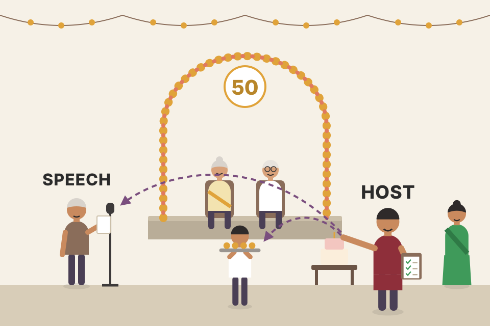
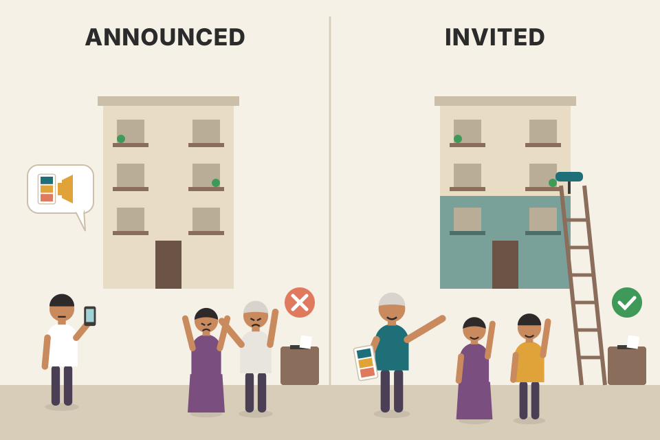
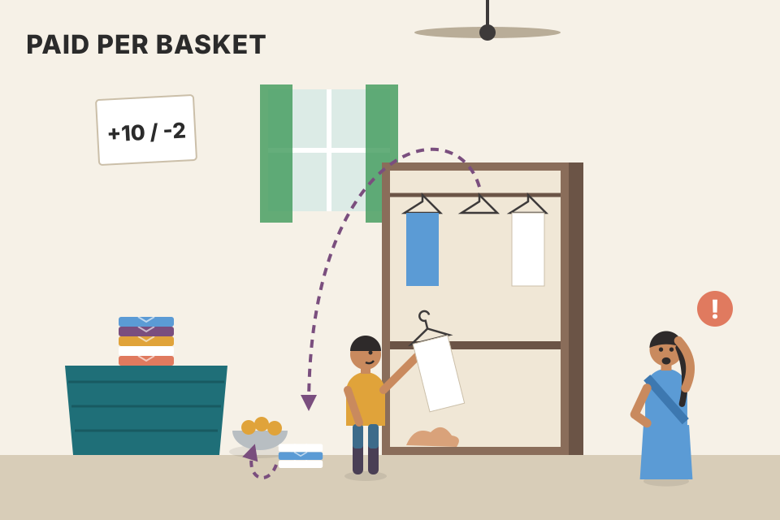
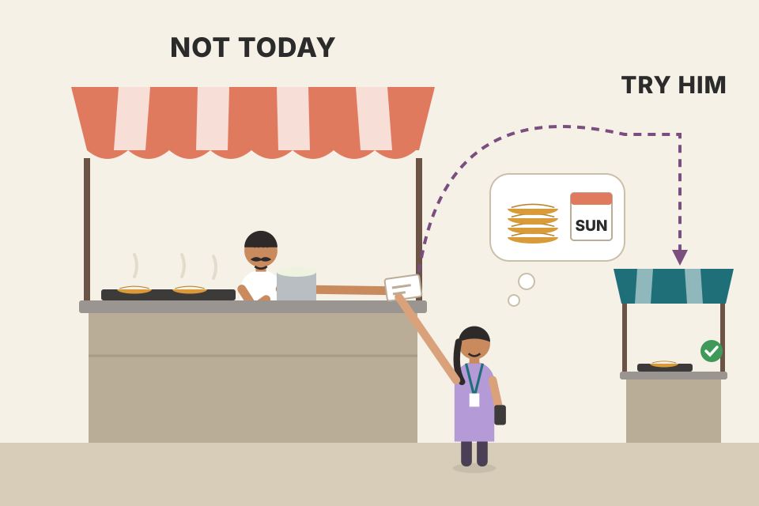
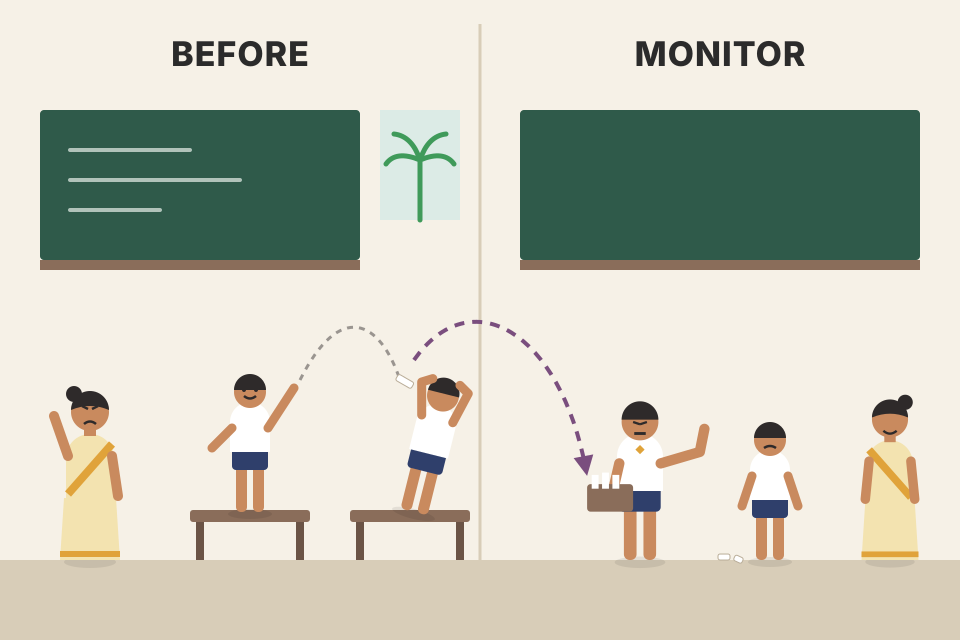
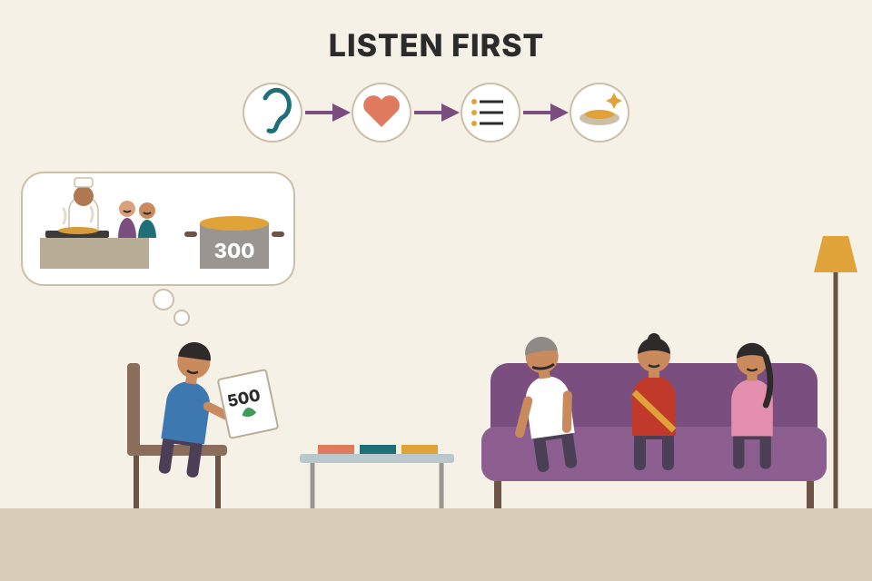
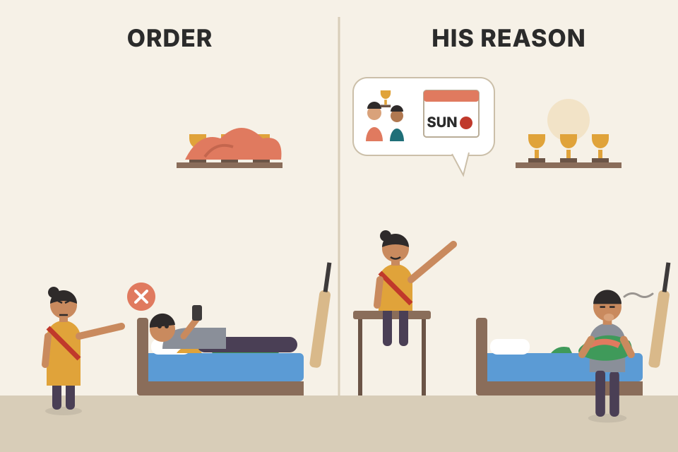
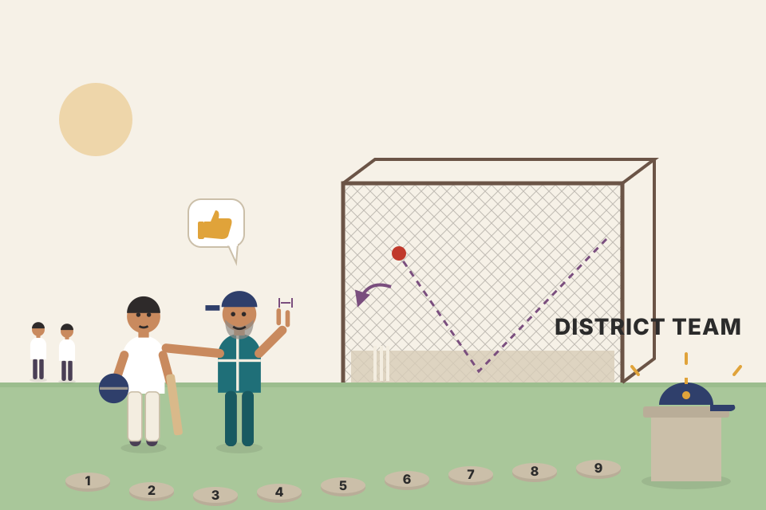

DALE CARNEGIE · HOW TO WIN FRIENDS · PART FOUR · CHAPTER 9 · PDF p234–239
Making People Glad to Do What You Want
When you need someone to do something (or to accept a "no"), shape the request so that doing it feels like a gain to them, not a loss.
This is the last chapter of Part Four, the "be a leader" part of the book. It opens with a diplomat breaking bad news to a disappointed Secretary of State so gently that the man walked away satisfied, and with a President who made a cabinet seat sound like a favour to himself. The same President then shows the cost of forgetting this: he shut his political rivals out of the League of Nations, and the League lost America. After that come small, everyday cases: a father who turned a hated chore into a deal, a man who turned down invitations by offering a replacement speaker, and three people (a store manager, Napoleon and a homeowner) who changed behaviour by handing out a title. Carnegie ends with six practical guidelines, an honest warning that this will not always work, and the argument that even a small improvement in your success rate is worth it. Then the book sums up all nine leadership principles in one list.
Principle 9 of Part Four
Make the other person happy about doing the thing you suggest.
How the chapter fits together
pdf p234–239 · read this first
Where it sits. This is the ninth and last chapter of Part Four, "Be a Leader: How to Change People Without Giving Offense or Arousing Resentment", which began with Ch.22 "If You Must Find Fault, This Is the Way to Begin". Part Four's first eight principles are mostly about correcting people without hurting them: begin with praise, point to mistakes indirectly, admit your own first, ask instead of order, let them save face, praise every improvement, give them a reputation to live up to, and (just before this, in Ch.29) make the fault seem easy to fix. This chapter covers the other half of leading: asking people to do things, and saying no to them, so that they feel good about it. It is really Part One's "arouse in the other person an eager want" applied to the job of a leader. After the principle comes the Part Four "In a Nutshell" (plate 08), which closes the main text of the book. Only the appendix, Lowell Thomas's portrait of Carnegie (Ch.31), follows.
The argument as a chain. Each row builds on the one before it.
Problemyou must give bad news or ask for something unwanted→people resist, or resent you
Opening proofHouse tells Bryan "you're too big for it"Wilson makes McAdoo's honour feel like a favour→they walk away pleased
The costWilson shuts the Republicans out of the League→no stake, no support→career, health, the League itself lost
How tosix guidelines: sincere · know the ask · their wants · their benefit · match · phrase it→John and the stockroom
Honestynot always; "happier", not "happy"→+10% success is worth it→Principle 9
Wrap-upPart Four In a Nutshell: all 9 principles→end of the main text
01 · THE OPENING STORY
Colonel House tells Bryan he can't go, and Bryan leaves satisfied
pdf p234
Carnegie opens with a hard human task: telling a proud, senior man that the job he badly wanted has gone to someone else, without making an enemy of him.
1915World War I, more than a year oldPresident Woodrow Wilsondiary of Colonel Edward M. House
The situation. By 1915 the European powers had been killing each other for over a year on a scale nobody had seen before, and Americans were horrified. Nobody knew whether peace was possible, but President Wilson decided to try: he would send a personal representative, a peace emissary, to talk with the leaders of the warring nations.
The man who wanted the job. William Jennings Bryan was Secretary of State and a well-known advocate of peace. He longed to go. He saw it as a chance to do great good and to make his name last for ever.
The man who got it. Wilson chose someone else: his close friend and adviser, Colonel Edward M. House. That left House with the awkward job of breaking the news to Bryan without offending him.
What House said. House's diary records that Bryan was plainly disappointed and said he had planned to make the trip himself. House answered that the President thought it unwise for anyone to go officially, and that if Bryan went, it would draw a great deal of attention and people would wonder why he was there.
The result. Bryan was satisfied.
The move, in one line. House never said "the President prefers me" or "you're not the right person". He said, in effect, you are too important for this job: a Secretary of State's visit would be front-page news and would make a quiet mission impossible. The same refusal, framed so that Bryan's pride grew instead of shrinking.
"Always make the other person happy about doing the thing you suggest."Carnegie's statement of the rule House was following (pdf p234)
Carnegie calls House shrewd and experienced in the ways of the world. Note what "the thing you suggest" means here: House was not asking Bryan to do anything, only to accept a decision. The principle covers both: getting a yes to a request and getting peaceful acceptance of a no.
Step through: how House handled it
Picture it

Your cousin badly wants to be the one who gives the speech at your grandparents' 50th anniversary, but the family has already asked the eldest uncle. Instead of saying "we picked someone else", your mother tells him: "You're the one everybody listens to. We need you to run the whole evening and keep the programme moving; if you're stuck at the mic for twenty minutes, nobody can do that." He spends the evening proudly running the show.
Where it breaks: in the family version your cousin gets a real, bigger role. House gave Bryan only a reason, not a new job. If the "you're too important" line is not true, or there is no role behind it, people see through it quickly, and next time they won't believe you.
What's happening behind it
The book's explanation: a refusal hurts mainly because it feels like a judgement on you. House removed the judgement. Bryan heard that his stature was the reason, so his sense of importance (the deep desire Carnegie described in Ch.2) was fed rather than wounded, and there was nothing left to resent.
Beyond the book: research on procedural and interpersonal justice (Jerald Greenberg, Robert Bies and others) finds that people accept bad outcomes far better when they get a believable reason and are treated with dignity, even though the outcome itself is unchanged. House supplied both. The catch, which matters for the "Where it can go wrong" plate: explanations only help when people believe them.
At work
You are picking who leads the new payments migration. Two senior engineers wanted it; one gets it. The House move for the other one is not "we went with Priya", full stop. If it is true, say why their absence from it is about their value: "You're the only one who knows the ledger service well enough to keep it stable while this migration runs. If you're heads-down on the migration, nobody is guarding the system it depends on." Then make sure that work really is visible and valued at review time.
Interview angle. "Tell me about a time you had to deliver disappointing news to a team member." A strong answer shows you gave a real reason, framed it around their strengths without inventing anything, and followed up with something concrete (a role, a promise you kept).
Wilson makes McAdoo feel doubly honoured, then snubs the Senate and loses the League
pdf p234–235
Carnegie now uses Woodrow Wilson twice: once as a master of the principle, once as a man whose failure to use it, in Carnegie's telling, changed world history.
When Wilson got it right: McAdoo
Wilson invited William Gibbs McAdoo to join his cabinet as Secretary of the Treasury. A cabinet post was the highest honour Wilson could offer anyone, so McAdoo would surely have said yes however it was put. Wilson still took care with the wording. McAdoo later recalled that Wilson made it sound as if McAdoo, by accepting, would be doing the President a favour. McAdoo came away feeling twice as important: honoured, and needed.
When he got it wrong: the League of Nations
After the war Wilson wanted the United States to join the League of Nations, which needed the Senate and the Republican Party. He did not take leading Republicans such as Elihu Root, Charles Evans Hughes or Henry Cabot Lodge to the peace conference; he took little-known men from his own party. The Republicans were snubbed: the League was never allowed to feel partly their idea, and they got no share in it.
The cost, as Carnegie counts it. That clumsy handling of people, he says, wrecked Wilson's career, ruined his health, shortened his life, kept America out of the League, and altered the history of the world. Carnegie's point is that the very man who used the principle beautifully when the stakes were low dropped it when the stakes were highest, and paid for it.
"…by accepting this great honor I would be doing him a favor."McAdoo on Wilson's invitation, quoted by Carnegie (pdf p235)
Beyond the book: the history, briefly
The Paris Peace Conference was in 1919. The Senate, with Lodge as chair of the Foreign Relations Committee, refused to ratify the Treaty of Versailles (and so League membership) in votes in November 1919 and March 1920.
Wilson toured the country to rally support in 1919, collapsed, and then had a serious stroke in October 1919. He left office in 1921 and died in 1924.
Historians do give weight to Wilson's refusal to include senior Republicans or to accept the Senate's reservations, but they also point to deep policy disagreements, Lodge's own politics and Wilson's illness. Carnegie's "wrecked his career … altered the history of the world" is a strong, one-cause version of a many-cause story.
Picture it

A housing society in Pune wants to repaint the building. The secretary picks the colour and the contractor with two friends and announces it on the WhatsApp group. The residents who weren't consulted object to everything (the colour, the cost, the timing) and the vote fails. Next year a new secretary asks the loudest critic to head the "colour committee". The same plan sails through.
Where it breaks: a society vote is small and local, and people mostly agree on the goal (a nicer building). Lodge and the Republicans had genuine policy objections to the League; inviting them might have softened the fight, but nobody can say it would have ended it.
What's happening behind it
The book's explanation: people support what they feel is partly theirs. McAdoo was made to feel needed; Root, Hughes and Lodge were made to feel unneeded, and people who are left out of a plan have every reason to find fault with it. This is the same mechanism as Part Three's "let the other person feel the idea is his or hers".
Beyond the book: management research calls this participation or voice: people who had a say in a decision accept and carry it out far more readily, even when the final decision is not the one they wanted. The classic early study is Coch and French (1948), on factory workers who resisted a change much less when they helped design it.
At work
You've designed a new service architecture and need the platform team's support to run it. The League mistake is to finish the design doc with your own team, then "present" it to platform for approval. The McAdoo move is to bring their lead in early: "You know the cluster limits better than anyone; I'd really value you shaping the deployment section." People who wrote part of the doc rarely block it.
Interview angle. "Tell me about a time you needed buy-in from another team." Show who you involved early, what you let them own, and how that changed the outcome. Bonus: an honest "League" moment where you left someone out and learned from it.
Making people feel important, sincerely: Part Two, Ch.6.
03 · AT HOME
Jeff and the pears: a hated chore turned into a deal
pdf p235
Statesmen are not the only ones who can do this, says Carnegie, and moves from the White House to a back garden.
Dale O. FerrierFort Wayne, Indianahis young son, Jeff$1 per basket · −$1 per missed pear
The chore. One of Jeff's jobs was to pick up the pears that fell under the family's pear tree, so that whoever mowed the grass would not have to keep stopping to clear them. Jeff disliked it. Often he skipped it, or did it so carelessly that the mower still had to stop and pick up the pears he had missed.
The move. Instead of a face-to-face showdown, Ferrier offered Jeff a deal: one dollar for every bushel basket of pears he filled, but once he said he was finished, one dollar taken back for every pear his father still found on the ground. He asked Jeff how that sounded.
The result. Jeff picked up every single pear. In fact, his father says, he then had to keep an eye on him to make sure he wasn't pulling a few pears off the tree to fill more baskets.
What changed. The chore was the same chore. What changed was Jeff's reason for doing it: before, it was something done to him; after, it was his chance to earn money, with a clear rule for what "done properly" meant. Ferrier also asked ("How does that sound?") instead of ordering, so Jeff agreed to the deal rather than just receiving it.
Notice the joke at the end. Carnegie tells it as a happy ending, and it is a funny one, but it also shows how strongly the new framing worked: Jeff now wanted the outcome so badly that he started to over-deliver in a way nobody intended.
Try it: Jeff's pear deal (modelled numbers)
Suppose 3 baskets' worth of pears have fallen. Move the sliders to see what the deal pays Jeff, and what happens to the goal (a clear lawn) when he games it.
Picture it

A mother in Chennai can't get her son to fold the laundry, so she offers him ₹10 per neatly folded basket, minus ₹2 for every crumpled shirt she finds in the cupboard. By the weekend the laundry is perfect, and she catches him pulling clean shirts off the hanger to fold them again.
Where it breaks: money works on a small child and a small chore. Paying adults to do what they already feel is part of their job can backfire; it can make the work feel like a transaction and push out the pride they took in it.
What's happening behind it
The book's explanation: Ferrier connected the task to something Jeff wanted (money) and turned a confrontation into a deal Jeff could accept. Jeff became happy to do the thing his father suggested, which is the whole principle.
Beyond the book: economists call the pears-off-the-tree problem gaming the metric. Goodhart's law: when a measure becomes a target, it stops being a good measure. India has the famous (and possibly exaggerated) example of the "cobra effect": a colonial bounty on dead cobras in Delhi supposedly led people to breed cobras for the reward. Ferrier's penalty for missed pears protected one side (quality); nothing protected the other (where the pears came from). Psychologists also note the overjustification effect (Lepper, Greene and Nisbett, 1973): paying for something people already enjoy can lower their own interest in it. Rewards work best for tasks nobody enjoys anyway, like Jeff's.
At work
You want the team to close stale tickets before the quarter ends. "Everyone must close ten tickets by Friday" gets you tickets closed as "won't fix" without anyone reading them: the pears pulled off the tree. A Ferrier-style deal names both sides: "Whoever clears their stale tickets gets first pick of the next quarter's projects; we'll spot-check a few closures together on Friday." The reward is something engineers actually want, and the spot-check protects quality.
The same trap hides in every engineering metric: lines of code, story points, test coverage, number of PRs merged. If you reward the number, someone will "pick pears off the tree".
Interview angle. "How do you motivate a team to do work nobody likes (on-call clean-up, docs, flaky tests)?" Mention tying it to something they want, making "done" measurable, and guarding against gaming.
Worked example: the same chore, two ways
The confrontation
"How many times do I have to tell you? The pears again! Go out there now and do it properly this time."
He goes, sulks, and the mower still stops. Nothing has changed except the mood.
The Ferrier deal
"Let's make a deal. A dollar for every basket you fill. But once you say you're done, I take a dollar back for each pear I find. Sound fair?"
He says yes because he wants the money, and the rule tells him what "properly" means.
Connects to
"Arouse in the other person an eager want", the root of this whole chapter: Part One, Ch.3.
Asking instead of ordering ("How does that sound?"): Part Four, Ch.4.
04 · SAYING NO
Turning down invitations without leaving anyone unhappy: offer a substitute
pdf p235–236
Carnegie describes a man he knew who had to refuse a great many requests to give talks, many from friends or from people he owed favours to. Yet he did it so skilfully that the people he refused were at least content with his answer.
What he did not do: pile up reasons. He didn't explain how busy he was, how this and that stood in the way.
What he did, in three steps:
He thanked them, sincerely, for the invitation.
He said he was sorry he could not accept.
Straight away, he suggested another speaker who could.
Carnegie's explanation: the man gave the other person no time to feel unhappy about the refusal. Before the disappointment could settle in, their thoughts had already moved on to a new speaker, someone who could say yes. Their real problem (they need a speaker for their event) was on its way to being solved.
Picture it

You ask the famous dosa stall near Gandhi Bazaar for a takeaway order of 40 for an office party. The owner says: "So kind of you to think of us. Sorry, Sunday we can't do bulk. But my brother-in-law's place two streets down does exactly this, same batter. Here's his number, tell him I sent you." You walk away pleased, with a phone number instead of a problem.
Where it breaks: the substitute must be genuinely good. If the brother-in-law's dosas are terrible, your disappointment comes back doubled, and now it is pointed at the owner who sent you there.
What's happening behind it
The book's explanation: unhappiness about a refusal needs a moment to form. A long list of excuses keeps the person's attention on the "no" (and invites them to argue with each excuse). A substitute moves their attention to the next step, so the "no" passes almost unnoticed.
Beyond the book: negotiators call this keeping the focus on interests, not positions (Fisher and Ury, Getting to Yes, 1981): the organiser's position is "I want you"; their interest is "I want a good speaker for my event". Serving the interest makes the position matter less. Research on saying no also finds that fewer, better reasons land better than many: each extra excuse sounds weaker and gives the other side something to push back on.
At work
As a senior engineer you get pulled into everything: "can you review this?", "can you join this design call?", "can you mentor our intern?". You cannot say yes to all of it. The substitute move: "Thanks for thinking of me. I can't take this one this sprint, but Arjun built the caching layer you're touching and would give you a better review than I would. Want me to loop him in?" Do check with Arjun first, and pick substitutes who would welcome the chance (that is often a growth opportunity for someone more junior).
Interview angle. "How do you handle competing priorities / say no to stakeholders?" Show that your "no" still moved their problem forward: a substitute person, a later date, a smaller version.
Rewrite it: say no, offer a substitute
Pick a blunt refusal, think about how you'd rewrite it, then reveal a Carnegie-style version and what changed.
Opening with honest appreciation before the hard part: Part Four, Ch.1.
05 · TITLES AND AUTHORITY
The price-tag supervisor, Napoleon's "toys", and the lawn "detective"
pdf p236
Three stories make one point: give someone a title and a feeling of authority over the very thing you want done, and they often start doing it willingly.
Gunter Schmidtfood store manager, West Germany"Supervisor of Price Tag Posting"
1 · The price tags. Gunter Schmidt, who took Carnegie's course in West Germany, managed a food store. One employee kept failing to put the correct price tags on the shelves where goods were displayed, which confused customers and brought complaints. Reminders, warnings and direct confrontations made little difference. So Schmidt called her into his office and appointed her Supervisor of Price Tag Posting for the entire store, responsible for keeping every shelf properly tagged. Her attitude changed completely, and from then on she did the job well.
NapoleonLegion of Honour15,000 crosses18 "Marshals of France"the "Grand Army"
2 · Napoleon's "toys". Is a title childish? Perhaps, says Carnegie, but people said the same to Napoleon. He created the Legion of Honour and handed out 15,000 of its crosses to his soldiers, made eighteen of his generals "Marshals of France", and called his troops the "Grand Army". Critics mocked him for giving toys to hardened veterans. His reply:
"Men are ruled by toys."Napoleon, as quoted by Carnegie (pdf p236)
Mrs Ernest GentScarsdale, New Yorkher "detective"
3 · The lawn. Mrs Ernest Gent, a friend of Carnegie's, was plagued by boys running across her lawn and ruining it. Criticism did nothing; coaxing did nothing. Then she picked the worst offender in the gang, gave him the title of her "detective", and put him in charge of keeping all trespassers off the lawn. Problem solved. Carnegie adds, with amusement, that the new detective built a bonfire in the back yard, heated an iron until it glowed red, and threatened to brand any boy who set foot on the grass.
Dated example. Carnegie tells the "detective" ending as a joke. Read today, it is a warning: authority handed to someone who has no judgement can turn into bullying, and threatening to burn children is not a "solved problem". The modern lesson is to give a title with clear limits on how the power may be used. A modern equivalent: making the student who keeps talking in class the "discussion moderator", with the job of making sure everyone else gets a turn.
Why this works, and why it is not just a trick. Notice that each title came with real ownership: the employee was now responsible for every shelf, the boy for the whole lawn. The title turned the task from someone else's rule that they kept breaking into their job, which they had every reason to do well. Carnegie's claim: what worked for Napoleon will work for you.
Picture it

In a school in Kerala, the boy who keeps throwing chalk in class is made "class monitor" in charge of the chalk box and the blackboard. Within a week he is the one scolding others for wasting chalk. The same energy that went into breaking the rule now goes into enforcing it.
Where it breaks: some monitors become little tyrants (like Mrs Gent's detective). And it only works if the title means something to the person; a title handed out to everyone, or one that is obviously a trick, carries no pride.
What's happening behind it
The book's explanation: a title feeds the desire to be important, the same need behind every chapter of this book. Once people feel important because of a task, doing it well protects their standing instead of threatening it.
Beyond the book: this links to the consistency principle in Robert Cialdini's Influence: once people accept a role, they act in line with it. Studies of job titles also find that self-chosen or meaningful titles can lower stress and raise engagement (Grant, Berg and Cable, 2014). But titles with no real responsibility, or used instead of fair pay, are widely seen as cheap and can breed cynicism.
At work
The developer who keeps breaking the build with flaky tests could be told off a fourth time. Or they could be made the "CI health owner" for this quarter: responsible for the flaky-test dashboard and for the weekly 5-minute update in stand-up. Many engineers who were careless about a thing become its best guardian once it is theirs. Give the role real scope (time in the sprint, a say in fixes) and limits (they fix and coach, they don't shame others in the channel).
Interview angle. "Tell me about a time you turned around a low performer / an unhelpful behaviour." Ownership stories are strong: you gave them responsibility for the very area they struggled with, supported them, and the behaviour changed. Say what the real responsibility was, not just the title.
Which response? (title or trap)
Pick a response to see how Carnegie would judge it.
Throw down a challenge, the other "make the work theirs" lever: Part Three, Ch.12.
06 · THE METHOD
Six guidelines for changing attitudes or behaviour
pdf p236–237
After the stories, Carnegie turns practical. When a leader needs to change how someone thinks or acts, he suggests keeping six guidelines in mind. In our words:
Mean it. Don't dangle a reward you can't actually give. Set aside your own gain and keep your attention on theirs.
Pin down the precise action. A fuzzy request can't be made attractive; decide first what, exactly, you are asking for.
Put yourself in their place. What do they actually want out of this (not what you think they ought to want)?
List what's in it for them if they go along with your suggestion.
Line those gains up with their wants. A gain that touches nothing they care about is no gain to them.
Word the request around their gain. The final step is the wording itself, which the stockroom example (next plate) shows.
How the six fit together (our reading). Guidelines 2 to 5 are homework you do before you speak; guideline 6 is the speaking; guideline 1 is the condition on all of it. Without step 1, the rest is manipulation: if the "benefit" you describe isn't real, the method collapses the first time they notice.
Self-audit: before my next request, have I…
Think of something you need from someone this week (a review, a favour at home, a change of habit). Tick the steps you've honestly done.
Picture it

A good wedding caterer in Hyderabad doesn't open with the menu he wants to sell. He first finds out exactly what the family needs (500 guests, half vegetarian), then what they really care about (the groom's side must be impressed), then works out what each package offers, matches it ("the live dosa counter is what guests remember"), and only then says: "With this, your guests will talk about the food for months." And he doesn't promise biryani for 500 if his kitchen can do 300.
Where it breaks: the caterer is selling, and the family can walk away. At work, the person you're asking often can't easily say no to you (you're their lead), so the "benefit" talk must be honest; otherwise it is an order dressed up as a favour.
What's happening behind it
The book's explanation: people act on their own wants, not yours (the idea Carnegie built Part One on). The six steps make you translate your need into their want before you open your mouth.
Beyond the book: this is close to what motivation researchers call making a task personally relevant, and to the "what's in it for me?" (WIIFM) rule taught in change management. Deci and Ryan's self-determination theory adds a refinement: the most durable motivation comes when people see how a task connects to something they themselves value, not just to a reward you offer.
At work
You need a teammate to write the migration runbook. Steps: (2) exactly what: a runbook for the Postgres 16 upgrade, by Thursday, reviewed by on-call; (3) what do they want: they've said they want to move toward an SRE role; (4) benefits: the runbook is visible SRE-type work, and they'll be the go-to person for the upgrade; (5) match: SRE ambitions ↔ ownership of an operational doc; (6) phrase it: "This runbook is real SRE work, and whoever writes it becomes the person on-call turns to during the upgrade. Would you like it?" And (1): only say it if you will actually point people to them and mention it in their review.
Interview angle. "How do you get people to do things when you're not their manager?" These six steps are a good structure for the answer: specific ask, their goals, the honest overlap, and how you said it.
John's stockroom, "happier, not happy", the 10% argument, and Principle 9
pdf p237–238
The example for guideline 6. Carnegie imagines a manager whose customers are visiting tomorrow and whose stockroom is a mess. Its keeper is called John. The job: sweep the floor, stack the stock neatly on the shelves, polish the counter.
The curt order
States the manager's need (customers are coming, I need it clean) and lists the tasks. Nothing in it for John.
The benefit version
Same tasks, but it adds three reasons that touch John: the job has to be done some day, so doing it now means it won't hang over him later; the visitors will be shown his stockroom; and a clean one will make the firm look efficient, with John having done his part for the company's image.
Carnegie's honest verdict. Will John be happy to do it? Probably not very. But he will be happier than if nobody had pointed out the benefits. And if you know John takes pride in how his stockroom looks and cares about the company's image, he is more likely to cooperate. He has also been reminded that the job won't go away, so doing it now saves him trouble later.
The limit, in his words and ours. Carnegie says it would be naïve to believe these approaches will always get a good response. His claim is smaller: most people's experience is that you are more likely to change attitudes this way than without it.
The 10% argument. If using these principles raises your success rate by even 10 percent, you are 10 percent more effective as a leader than before, and that, Carnegie tells the reader, is your benefit. (Notice what he does here: in the last lines of Part Four he applies Principle 9 to you, the reader. He tells you what you gain from doing what he suggests. That reading is ours; the book doesn't point it out.)
Principle 9 of Part Four
Make the other person happy about doing the thing you suggest.
Dated wording. The book's guideline 6 speaks of conveying that "he" personally will benefit, and the example worker is a stockroom man called John; today we'd say "they", and the same advice applies to anyone you ask for anything.
Rewrite it: from order to "here's what's in it for you"
Pick a curt request, decide how you'd rewrite it, then reveal a benefit-framed version and what changed.
Try it: what does "10 percent" buy you? (modelled numbers)
Set how many requests you make in a month that need someone's willing effort, and your current "yes, gladly" rate. See what Carnegie's 10% improvement adds up to.
Picture it

Asking your teenage nephew to clean his room before relatives visit. "Clean it, the relatives are coming" gets an eye-roll. "If we do it today it's done before your match on Sunday, and your aunt's bringing the cousins, so you'll want them to see your cricket trophies and not a pile of clothes" gets a sigh, and a clean room. He isn't delighted. He's just less unhappy, which is all Carnegie promised.
Where it breaks: it only works if you've guessed right about what he cares about. If he couldn't care less what the cousins think, the line falls flat; you have to know him (guideline 3) before you can choose the benefit.
What's happening behind it
The book's explanation: the benefit version gives John reasons of his own (no job hanging over him later, pride in his stockroom, a share in the firm's good name) so he isn't only working for the manager. Carnegie is careful to say this raises the odds; it doesn't guarantee anything.
Beyond the book: a well-known 1978 study by Ellen Langer found people were more willing to let someone skip a photocopier queue when a reason was given ("because I'm in a rush") than when none was. Reasons matter, even simple ones. Adam Grant's work on task significance (for example, call-centre fundraisers who met a scholarship student raised far more money afterwards) suggests that showing people why their work matters to others is one of the strongest benefits you can point to. John's "company image" is a small version of that.
At work
Big client demo tomorrow, and the staging environment is a mess of half-finished feature flags. The curt version: "Clean up staging tonight, the client demo is tomorrow." The Carnegie version: "This has to be done before the release anyway, so doing it now takes it off your plate next week. The client is going to see the feature you built running on staging, and a clean environment makes it look as solid as it actually is. Can you take it?" Not delight, but a more willing yes, and better work.
Interview angle. "How do you get your team to do unglamorous work?" Mention that you give the honest reason, tie it to what they care about (their feature, their weekend, their reputation), and don't pretend it is fun. Carnegie's "happier, not happy" is a mature thing to say out loud.
Appealing to pride and to nobler motives (John's company image): Part Three, Ch.10.
08 · PART FOUR IN A NUTSHELL
Be a Leader: the nine principles
pdf p238–239
As with every Part, the book ends Part Four with an "In a Nutshell" list. Its short preface says that a leader's job often includes changing the attitudes and behaviour of the people they lead, and offers these nine suggestions for doing it. Tap any of them to open its page.
How the nine fit together (our reading; the book just lists them). They follow the life of a single piece of feedback, from the moment you open your mouth to the moment the person is doing the new thing willingly:
The thread through all nine. Part Four never tells you to stop correcting people; its title promises to change them. Every principle keeps the correction and removes the sting: wrap it in honest praise, make it indirect, share your own failures, ask, protect their dignity, then reward progress, believe in them out loud, make the fix look doable, and frame the next step as their gain. Read together with Part One's "don't criticize" (Ch.1), this is the book's answer to "but sometimes I have to give hard feedback".
Which principle? Part Four review
Pick the principle that fits best.
Picture it

A good cricket coach with a young batsman who keeps getting out to the short ball. He starts with what's working ("your cover drive is the best in the nets", P1), mentions he was hopeless against bouncers at that age (P3), asks "what are you watching when the ball is pitched short?" (P4, P2), says nothing in front of the senior players (P5), cheers the first time he sways out of the way (P6), tells him "you're going to be the one who handles fast bowling for this side" (P7), shows him it's just a small change in his trigger movement (P8), and frames the extra net session as "this is what gets you picked for the district team" (P9).
Where it breaks: a coach and a young player share one obvious goal. At work, goals often differ (your deadline, their weekend), and some feedback has to be direct and immediate, such as a security hole or a production risk. The nine are a toolkit for most feedback, not a rule that every correction must use all nine.
Connects to
The earlier nutshells: Part One in Ch.3, Part Two in Ch.9, Part Three in Ch.21. All chapters: the index.
This list ends the book's main text. What follows is the appendix, Lowell Thomas's portrait of Carnegie: Ch.31 "A Shortcut to Distinction".
09 · WRAP-UP
Summary and key terms
pdf p234–239
Bad news can leave people pleased. In 1915 Colonel House, not Bryan, became Wilson's peace emissary to Europe. House told the disappointed Secretary of State that his going would attract too much attention: in effect, that he was too important for the job. Bryan was satisfied.
Honours can be doubled by the wording. Wilson offered McAdoo the Treasury in a way that made accepting feel like doing the President a favour.
Leaving people out has a price. Wilson took no leading Republicans (Root, Hughes, Lodge) to the peace conference and gave them no share in the League. Carnegie says this cost Wilson his career and health, kept America out of the League and changed world history.
Small cases work the same way. Ferrier turned Jeff's pear chore into a deal ($1 per basket, −$1 per missed pear), and Jeff over-delivered. A man who declined many speaking invitations thanked, regretted and at once suggested a substitute speaker, so nobody had time to feel refused.
Titles and authority. Schmidt made a careless employee "Supervisor of Price Tag Posting" and her attitude changed. Napoleon gave out 15,000 Legion of Honour crosses, made 18 marshals and named the "Grand Army": "Men are ruled by toys." Mrs Gent made the worst lawn-trampler her "detective" (who overdid it with a red-hot iron).
Six guidelines (our shorthand): mean it and offer only real rewards; pin down the exact ask; step into their shoes; list their gains; line the gains up with their wants; word the request around their gain.
John's stockroom: the benefit version won't make John happy, but happier than a curt order, especially if he takes pride in his stockroom and the company's image.
Honest limits: it won't always work; it raises the odds. Even 10% more successes makes you 10% more effective as a leader.
Principle 9: Make the other person happy about doing the thing you suggest. Then the Part Four nutshell lists all nine leadership principles.
Term or phrase
Meaning on this page
Where
Principle 9 (Part Four)
Make the other person happy about doing the thing you suggest.
pdf p234, p238
"Too important for the job"
House's way of refusing Bryan: the reason for the no is the person's own stature.
pdf p234
Doing me a favour
Wilson's framing of an honour so the receiver feels needed as well as honoured.
pdf p234–235
A finger in the pie
A share in a plan; the Republicans were denied one in the League.
pdf p235
The deal
Ferrier's reward-and-penalty offer that replaced a confrontation.
pdf p235
The substitute
Declining by thanking, regretting and immediately naming someone who can say yes.
pdf p235–236
Title and authority
Giving someone ownership of the thing you want done (Schmidt, Napoleon, Gent).
pdf p236
"Men are ruled by toys"
Napoleon's answer to critics of his medals and titles.
pdf p236
Six guidelines
Our shorthand: mean it · exact ask · their wants · their gains · match · word it.
pdf p236–237
Happier, not happy
Carnegie's realistic promise for benefit-framed requests.
pdf p237
10 percent
Even a small gain in success rate is a real gain in leadership.
pdf p237–238
In a Nutshell: Be a Leader
The nine Part Four principles, Ch.22–30.
pdf p238–239
10 · USE IT
Practice this week
beyond the book
Small exercises, each with a way to tell whether it worked. The exercises are ours; the ideas behind them are the chapter's.
The six-line plan. Before your next real request (a review, a task, a favour at home), write one line for each guideline: the exact ask, what they want, their benefit, the match, your opening sentence, and "can I deliver this?". Worked if: the request you actually make is shorter, and the reply is a yes without a follow-up nudge.
The substitute no. The next time you must decline something, reply with thanks, a short regret and one concrete alternative (a person, a date, a smaller version). No list of excuses. Worked if: the other person replies about the alternative, not about your refusal.
The House test. When you have to give someone a disappointing decision, find one honest reason that respects their strengths, and say it. Worked if: they stay engaged with you over the next week rather than going quiet.
Hand over a title. Pick one recurring problem (flaky tests, stale docs, a messy shared fridge) and give one person real ownership of it, with a clear scope and limits. Worked if: after two weeks you no longer have to raise the problem yourself.
Check the pears. If you set any incentive or metric this week, ask "how could someone hit this number without doing what I actually want?" and close that gap. Worked if: you find at least one loophole before someone else does.
Keep the 10% tally. For one week, note each request and whether you got a willing yes. Try the benefit framing on half of them. Worked if: you can see any difference at all. That is Carnegie's claim, and you have now tested it.
11 · LIMITS
Where it can go wrong
pdf p234–238 · plus beyond the book
The book's own caveats first.
Be sincere, and don't promise what you can't deliver. This is guideline 1, the first thing Carnegie says about method. The benefit you describe must be real.
Focus on their benefit, not yours. Also guideline 1. If the "benefit" is really just your convenience in disguise, it isn't the principle.
"Happier", not "happy". Carnegie admits John probably won't be very happy to clean the stockroom. The principle improves willingness; it doesn't make chores fun.
It won't always work. He calls it naïve to expect a good reaction every time and argues only for better odds, even a 10% improvement.
"Childish? Perhaps." He anticipates the objection that titles are toys, and answers with Napoleon rather than denying it.
Beyond the book: our critique
House's move sits close to the line. "You're too important to go" was a kind framing of a decision made for other reasons. It worked because it was plausible and Bryan wanted to believe it. If you say such things when they aren't true, you are flattering, and people who find out stop trusting every later compliment. Use a strength-based reason only if you actually believe it.
Titles can be a substitute for pay or real power. "Supervisor of Price Tag Posting" with no raise, no time and no authority is extra work with a label on it. Many people today read inflated titles as a cheap trick. A title works when it brings real ownership and recognition, and ideally reward.
Delegated authority needs limits. Mrs Gent's detective threatening to brand children is funny in the book and alarming in reality. When you hand someone power over others (code owners, release captains, a class monitor), say what they may and may not do.
Incentives get gamed. Jeff pulling pears off the tree is Goodhart's law. Every reward needs a check on how the result was achieved, not just the number.
Some things are not optional. Security fixes, legal requirements and safety rules should be explained, but people don't have to be "glad" about them before they're done. Dressing a mandatory task as a favour can feel manipulative; it's more respectful to say "this one is required, and here is why it matters".
Wilson's story is simplified. The League's defeat had many causes (policy objections, Senate politics, Wilson's stroke). It's a good illustration of exclusion breeding opposition, not proof that tact alone would have changed history.
Culture and hierarchy. In strongly hierarchical workplaces (including many Indian offices), a manager's "would you be glad to…?" can be heard as an order anyway. If your request really is an instruction, saying so plainly and then explaining the benefit is more honest than pretending it is a choice.
12 · TEST YOURSELF
Check yourself
pdf p234–239
Try to answer before opening each one. The first half is story recall; the second half is using the principle.
1. Why did Bryan want to be Wilson's peace emissary, and how did House break the news that he wouldn't be?
Bryan, Secretary of State and a peace advocate, saw it as a chance to do great good and make his name immortal. House told him the President thought it unwise for anyone to go officially, and that Bryan's going would attract a lot of attention and make people wonder why he was there. In effect he was too important for the job, and Bryan was satisfied.
2. How did Wilson invite McAdoo into his cabinet, and why does Carnegie admire it?
He offered him the post of Secretary of the Treasury in a way that made McAdoo feel that accepting would be doing Wilson a favour. It was already the highest honour Wilson could give, yet the wording made McAdoo feel doubly important.
3. What did Wilson do wrong over the League of Nations, and what did it cost, in Carnegie's view?
He refused to take prominent Republicans such as Elihu Root, Charles Evans Hughes or Henry Cabot Lodge to the peace conference and took unknown men from his own party, so the Republicans had no share in the League and no reason to feel it was partly theirs. Carnegie says this wrecked Wilson's career, ruined his health, shortened his life, kept America out of the League and changed world history.
4. What was Ferrier's deal with Jeff, and what was the funny side effect?
$1 for each bushel basket of pears picked up, minus $1 for every pear left on the ground afterwards. Jeff picked up every pear, and his father had to watch that he didn't pull pears off the tree to fill more baskets.
5. How did the man who declined speaking invitations keep people content?
He didn't list excuses about being too busy. He thanked them for the invitation, said he regretted he couldn't accept, and immediately suggested another speaker, so their thoughts moved to someone who could say yes before they had time to feel unhappy.
6. What did Gunter Schmidt do about the employee who kept getting price tags wrong?
After reminders, warnings and confrontations failed, he called her in and appointed her Supervisor of Price Tag Posting for the whole store, responsible for every shelf. Her attitude changed completely and she did the job well from then on.
7. What did Napoleon give out, and how did he answer the critics?
15,000 Legion of Honour crosses, the title "Marshal of France" for eighteen generals, and the name "Grand Army" for his troops. When critics said he was giving toys to veterans, he answered, "Men are ruled by toys."
8. What were Carnegie's six guidelines for changing attitudes or behaviour?
In short: (1) sincerity, with no rewards you can't give and the focus on their gain rather than yours; (2) a precise ask; (3) empathy about what they really want; (4) the gains in it for them; (5) a match between those gains and their wants; (6) wording that puts their gain up front.
9. Does Carnegie claim John will be happy to clean the stockroom? What exactly does he claim?
No. Probably not very happy, but happier than if the benefits hadn't been pointed out, and more cooperative if he takes pride in the stockroom and the company image. More broadly, the approach won't always work, but it raises the odds; even 10% more success makes you 10% more effective as a leader.
10. Application: two engineers wanted to lead a new project; you chose one. What would a House-style conversation with the other sound like?
Give a real reason that respects their strengths, for example that they're the person keeping the critical system the project depends on stable, and attach real recognition or a next opportunity. Don't invent a flattering reason you don't believe; that turns the principle into manipulation.
11. Application: you're asked to review a PR you have no time for. Write the Carnegie-style reply in one sentence.
Something like: "Thanks for asking me. I can't get to it before Thursday, but Meera wrote the module you're changing and could review it today; want me to tag her?" Thanks, regret, substitute; no list of excuses. (Check with Meera first.)
12. Application: you want the team to cut the flaky-test count. You plan to reward whoever closes the most flaky-test tickets. What would Jeff's pears warn you about?
People will hit the number in ways you didn't intend, for example marking tests as skipped or closing tickets without real fixes. Pair the reward with a check on how it was achieved (spot-checks, a CI stability metric), or give someone ownership of CI health instead of paying per ticket.
13. Interview: "How do you get people to do unglamorous work?" How does this chapter shape a strong answer?
Show you made the ask specific, found what the person actually cared about, pointed out an honest benefit (less work later, visible ownership, their feature looking good), sometimes gave real ownership or a role, and didn't pretend it was fun. Mention a result.
14. Name the nine Part Four principles in order.
(1) Begin with praise and honest appreciation. (2) Call attention to people's mistakes indirectly. (3) Talk about your own mistakes before criticizing the other person. (4) Ask questions instead of giving direct orders. (5) Let the other person save face. (6) Praise the slightest improvement and every improvement; be "hearty in your approbation and lavish in your praise". (7) Give the other person a fine reputation to live up to. (8) Use encouragement; make the fault seem easy to correct. (9) Make the other person happy about doing the thing you suggest.
15. Why is the Mrs Gent story both a success and a warning?
Success: giving the worst trespasser a title and authority stopped the trespassing where criticism and coaxing had failed. Warning: the "detective" used his power by threatening to brand other boys with a red-hot iron. Authority you hand out needs limits on how it may be used.
13 · SOURCES
References
pdf p234–239
Book pages and other sources used on this page
Dale Carnegie, How to Win Friends and Influence People, revised edition (1981; Simon & Schuster 2009 printing), Part Four, Chapter 9, "Making People Glad to Do What You Want", pdf p234–238, and Part Four "In a Nutshell: Be a Leader", pdf p238–239. Stories by page: House and Bryan p234; Wilson and McAdoo p234–235; Wilson and the League p235; Ferrier and Jeff p235; the substitute speaker p235–236; Schmidt, Napoleon, Mrs Gent p236; six guidelines p236–237; John's stockroom p237; the 10% argument p237–238; Principle 9 p238.
Diary of Colonel Edward M. House and recollection of William Gibbs McAdoo, both as quoted in the chapter (pdf p234–235). Retold briefly here, not reproduced.
Beyond the book (named where used): J. Greenberg and R. Bies on interactional and procedural justice; L. Coch and J. French, "Overcoming resistance to change" (1948); C. Goodhart's law and the "cobra effect"; M. Lepper, D. Greene and R. Nisbett on the overjustification effect (1973); R. Fisher and W. Ury, Getting to Yes (1981); R. Cialdini, Influence (commitment and consistency); A. Grant, J. Berg and D. Cable on self-reflective job titles (2014); E. Deci and R. Ryan, self-determination theory; E. Langer, A. Blank and B. Chanowitz on the "because" photocopier study (1978); A. Grant on task significance among fundraisers (2007–2008).
Historical notes (Beyond the book): the Paris Peace Conference (1919); the US Senate's votes against the Treaty of Versailles (November 1919 and March 1920); Wilson's 1919 speaking tour and stroke; Napoleon's founding of the Légion d'honneur (1802) and his marshalate (1804).